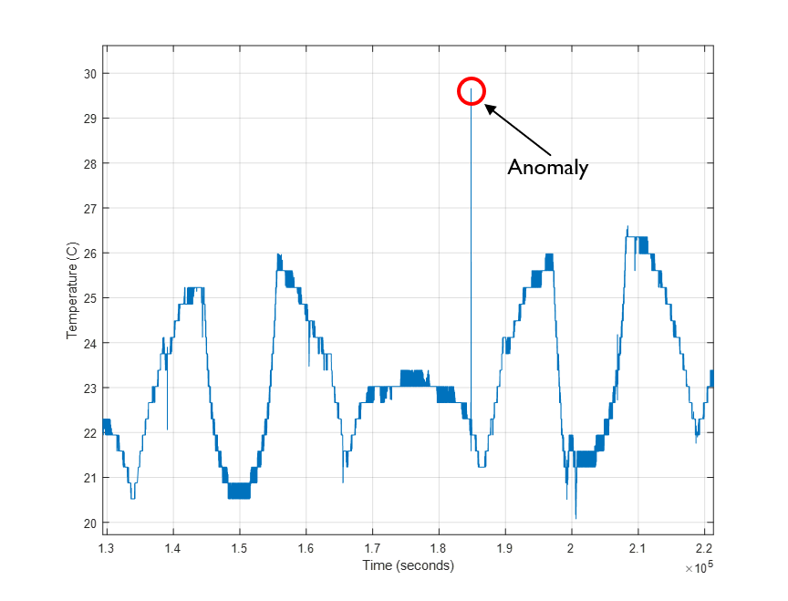

Spacecraft will generate a massive amount of data the longer they are on orbit, from telemetry data containing voltages, temperatures, etc to raw data from the various types of payloads on orbit
Spacecraft have onboard anomaly responses for most known failure cases to safe the vehicle
Normally low/high, red/yellow limits set for certain monitors with corresponding response (either automatic or visual alarm)
Some anomalies can be hard to predict, multiple components can react slightly out of family to create larger issue
Benefits of utilizing machine learning for spacecraft:
Prevents loss of mission over potentially high priority targets
Automatic response would limit both downtime and human interaction
Higher award/incentive fees for lower mission outage percentage
Limits time spent by operators and factory investigating and implementing a fix
Depending on program and customer, recovery can take anywhere from a few hours to multiple days
Predict future anomalous conditions and potentially react before an issue were to occur
Some programs have multiple vehicles on orbit meaning there is a plethora of historical training data available
Goal: Utilize ARIMA & OCSVM to create a hybrid anomaly detection method and compare results with other common algorithms/methods

Example of anomaly in telemetry
Data Setup & Preprocessing
Unfold below code to see setup. Basics are generating 28 features
setting up training data set and validation data set